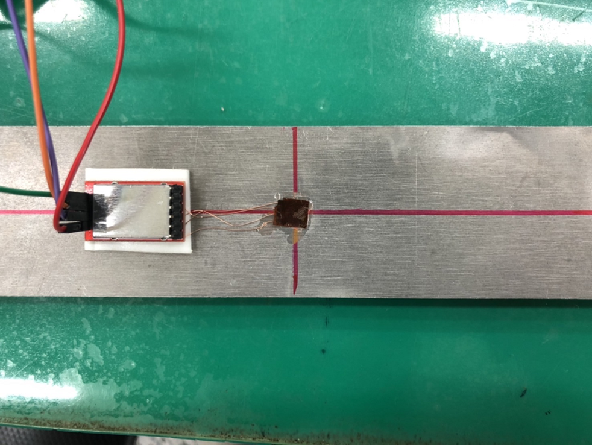
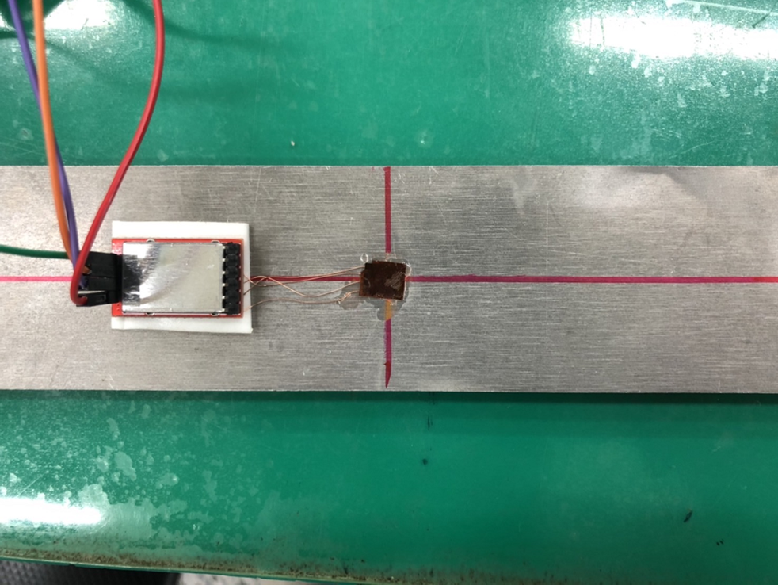
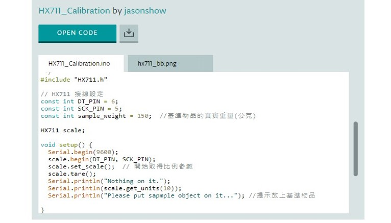

評估橋樑維修提醒：測量平時橋樑所承受的力，倘若數值超過一定安全數值，就必須給予警示讓相關人員來檢查。
限制承載橋樑人數：藉由橋樑能承受的數值計算，限制橋上所能承受的人數。

應變規位置與架設說明
 

程式碼
#include "HX711.h"
#include
// 接線設定
const int DT_PIN = 6;
const int SCK_PIN = 5;
Servo myServo1;
Servo myServo2;
int pos = 0; // 設定初始位置
const int scale_factor = 350; // 比例參數
HX711 scale;
void setup() {
Serial.begin(9600);
Serial.println("Initializing the scale");
scale.begin(DT_PIN, SCK_PIN);
Serial.println("Before setting up the scale:");
Serial.println(scale.get_units(5), 0); // 未設定比例參數前的數值
scale.set_scale(scale_factor); // 設定比例參數
scale.tare(); // 歸零
Serial.println("After setting up the scale:");
Serial.println(scale.get_units(5), 0); // 設定比例參數後的數值
Serial.println("Readings:");
pinMode(LED_BUILTIN, OUTPUT);
myServo1.attach(9);
myServo2.attach(10);
}
void loop() {
Serial.print(scale.get_units(1), 0); Serial.println("\t");
delay(1000);
if (scale.get_units(1) < -500) {
digitalWrite(LED_BUILTIN, HIGH);
delay(2000);
myServo1.write(90);
myServo2.write(90);
} else {
digitalWrite(LED_BUILTIN, LOW);
delay(2000);
myServo1.write(0);
myServo2.write(0);
}
delay(10);
scale.power_down(); // 進入睡眠模式
delay(10);
scale.power_up(); // 結束睡眠模式
}
HX711程式碼校正

#include "HX711.h"
#include
// 接線設定
const int DT_PIN = 6;
const int SCK_PIN = 5;
Servo myServo1;
Servo myServo2;
int pos = 0; // 設定舵機位置
const int scale_factor = 350; // 比例參數，依據校正程式中取得
HX711 scale;
void setup() {
Serial.begin(9600);
Serial.println("Initializing the scale");
scale.begin(DT_PIN, SCK_PIN);
Serial.println("Before setting up the scale:");
Serial.println(scale.get_units(5), 0); // 沒設定比例參數的數值
scale.set_scale(scale_factor); // 設定比例參數
scale.tare(); // 歸零
Serial.println("After setting up the scale:");
Serial.println(scale.get_units(5), 0); // 設定比例參數後的數值
Serial.println("Readings:");
pinMode(LED_BUILTIN, OUTPUT); // 在這個訊息之前就不要放東西在電子稱上
myServo1.attach(9);
myServo2.attach(10);
}
void loop() {
Serial.print(scale.get_units(1), 0);
Serial.println("\t");
delay(1000);
if (scale.get_units(1) > -500) {
digitalWrite(LED_BUILTIN, LOW);
Serial.println(1);
delay(2000);
myServo1.write(0);
myServo2.write(0);
}
else if (scale.get_units(1) < -1000) {
digitalWrite(LED_BUILTIN, LOW);
Serial.println(3);
delayMicroseconds(100000);
digitalWrite(LED_BUILTIN, HIGH);
delayMicroseconds(100000);
}
else if (scale.get_units(1) < -500) {
digitalWrite(LED_BUILTIN, HIGH);
Serial.println(2);
delay(2000);
myServo1.write(90);
myServo2.write(90);
}
delay(10);
scale.power_down(); // 進入睡眠模式
delay(10);
scale.power_up(); // 結束睡眠模式
}